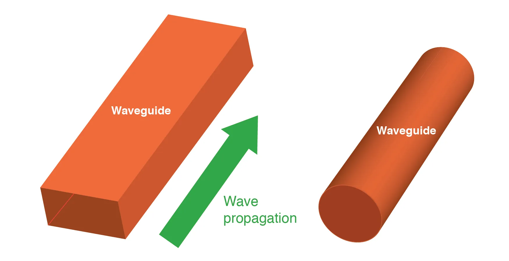
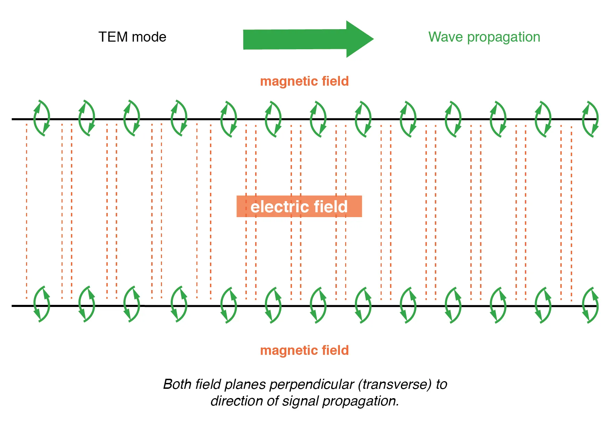
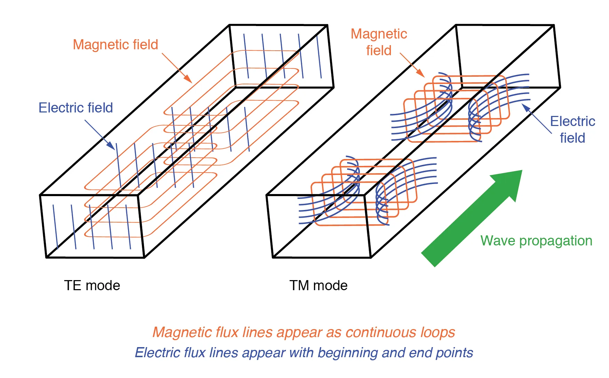
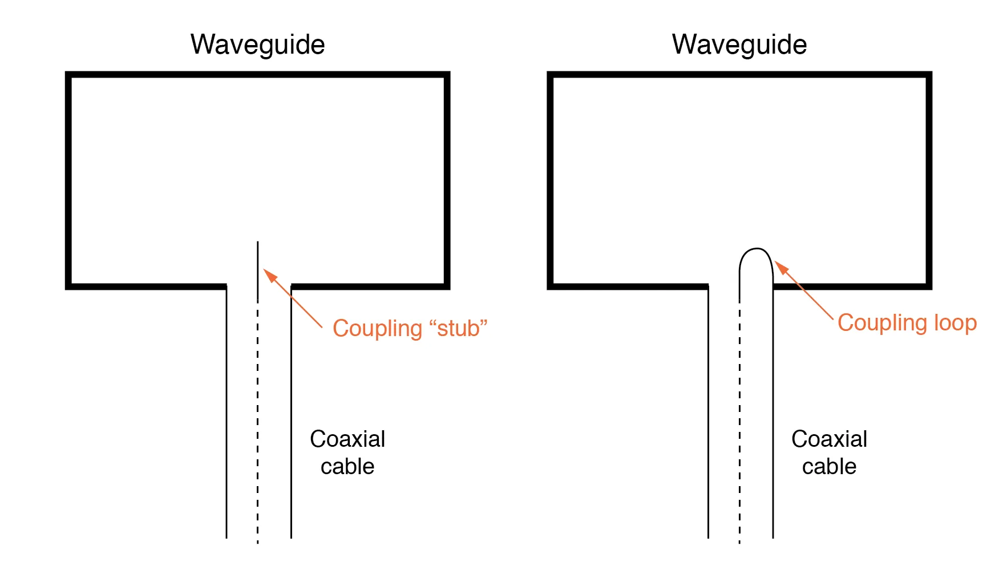
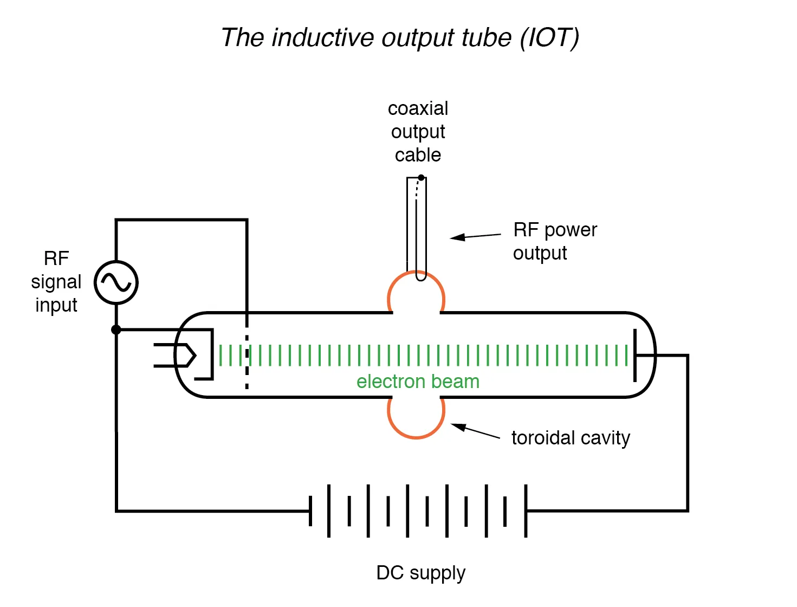
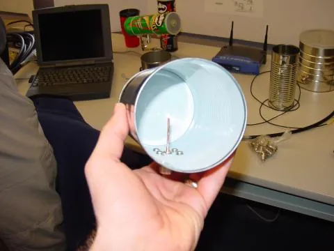

A waveguide is a special form of transmission line consisting of a hollow, metal tube. The tube wall provides distributed inductance, while the empty space between the tube walls provide distributed capacitance.

Wave guides conduct microwave energy at lower loss than coaxial cables.
Waveguides are practical only for signals of extremely high frequency, where the wavelength approaches the cross-sectional dimensions of the waveguide. Below such frequencies, waveguides are useless as electrical transmission lines.
When functioning as transmission lines, though, waveguides are considerably simpler than two-conductor cables—especially coaxial cables—in their manufacture and maintenance.
With only a single conductor (the waveguide’s “shell”), there are no concerns with proper conductor-to-conductor spacing, or of the consistency of the dielectric material, since the only dielectric in a waveguide is air.
Moisture is not as severe a problem in waveguides as it is within coaxial cables, either, and so waveguides are often spared the necessity of gas “filling.”
Waveguides may be thought of as conduits for electromagnetic energy, the waveguide itself acting as nothing more than a “director” of the energy rather than as a signal conductor in the normal sense of the word.
In a sense, all transmission lines function as conduits of electromagnetic energy when transporting pulses or high-frequency waves, directing the waves as the banks of a river direct a tidal wave.
However, because waveguides are single-conductor elements, the propagation of electrical energy down a waveguide is of a very different nature than the propagation of electrical energy down a two-conductor transmission line.
All electromagnetic waves consist of electric and magnetic fields propagating in the same direction of travel, but perpendicular to each other. Along the length of a normal transmission line, both electric and magnetic fields are perpendicular (transverse) to the direction of wave travel.
This is known as the principal mode, or TEM (Transverse Electric and Magnetic) mode. This mode of wave propagation can exist only where there are two conductors, and it is the dominant mode of wave propagation where the cross-sectional dimensions of the transmission line are small compared to the wavelength of the signal.

Twin lead transmission line propagation: TEM mode.
At microwave signal frequencies (between 100 MHz and 300 GHz), two-conductor transmission lines of any substantial length operating in standard TEM mode become impractical.
Lines small enough in cross-sectional dimension to maintain TEM mode signal propagation for microwave signals tend to have low voltage ratings, and suffer from large, parasitic power losses due to conductor “skin” and dielectric effects.
Fortunately, though, at these short wavelengths there exist other modes of propagation that are not as “lossy,” if a conductive tube is used rather than two parallel conductors. It is at these high frequencies that waveguides become practical.
When an electromagnetic wave propagates down a hollow tube, only one of the fields—either electric or magnetic—will actually be transverse to the wave’s direction of travel.
The other field will “loop” longitudinally to the direction of travel, but still be perpendicular to the other field. Whichever field remains transverse to the direction of travel determines whether the wave propagates in TE mode (Transverse Electric) or TM (Transverse Magnetic) mode.

Waveguide (TE) transverse electric and (TM) transverse magnetic modes.
Many variations of each mode exist for a given waveguide, and a full discussion of this subject is well beyond the scope of this book.
Signals are typically introduced to and extracted from waveguides by means of small antenna-like coupling devices inserted into the waveguide. Sometimes these coupling elements take the form of a dipole, which is nothing more than two open-ended stub wires of appropriate length.
Other times, the coupler is a single stub (a half-dipole, similar in principle to a “whip” antenna, 1/4λ in physical length), or a short loop of wire terminated on the inside surface of the waveguide.

Stub and loop coupling to waveguide.
In some cases, such as a class of vacuum tube devices called inductive output tubes (the so-called klystron tube falls into this category), a “cavity” formed of conductive material may intercept electromagnetic energy from a modulated beam of electrons, having no contact with the beam itself.

Klystron inductive output tube.
Just as transmission lines are able to function as resonant elements in a circuit, especially when terminated by a short-circuit or an open-circuit, a dead-ended waveguide may also resonate at particular frequencies.
When used as such, the device is called a cavity resonator. Inductive output tubes use toroid-shaped cavity resonators to maximize the power transfer efficiency between the electron beam and the output cable.
A cavity resonant frequency may be altered by changing its physical dimensions. To this end, cavities with movable plates, screws, and other mechanical elements for tuning are manufactured to provide coarse resonant frequency adjustment.
If a resonant cavity is made open on one end, it functions as a unidirectional antenna.
The following photograph shows a home-made waveguide formed from a tin can, used as an antenna for a 2.4 GHz signal in an “802.11b” computer communication network.
The coupling element is a quarter-wave stub: nothing more than a piece of solid copper wire about 1-1/4 inches in length extending from the center of a coaxial cable connector penetrating the side of the can.

Can-tenna illustrates stub coupling to waveguide.
A few more tin-can antennas may be seen in the background, one of them a “Pringles” potato chip can. Although this can is of cardboard (paper) construction, its metallic inner lining provides the necessary conductivity to function as a waveguide.
Some of the cans in the background still have their plastic lids in place. The plastic, being nonconductive, does not interfere with the RF signal, but functions as a physical barrier to prevent rain, snow, dust, and other physical contaminants from entering the waveguide.
“Real” waveguide antennas use similar barriers to physically enclose the tube, yet allow electromagnetic energy to pass unimpeded.